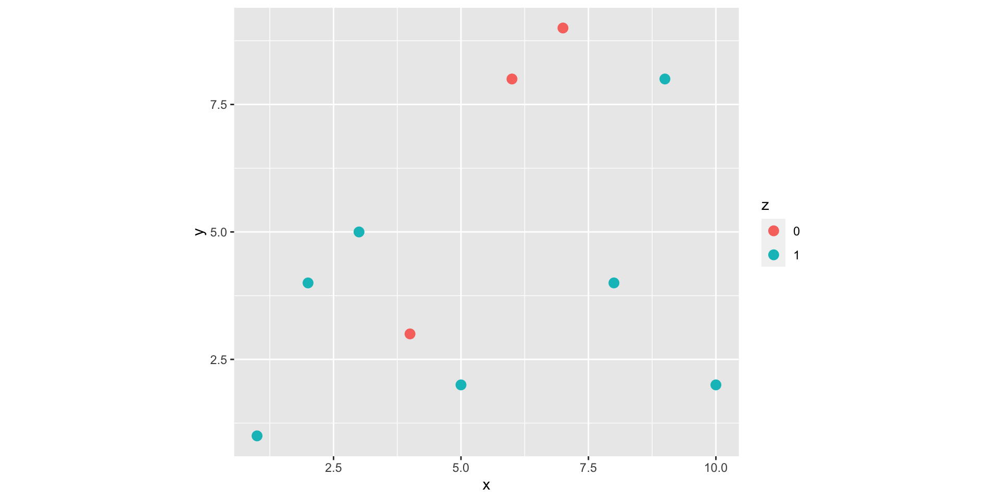
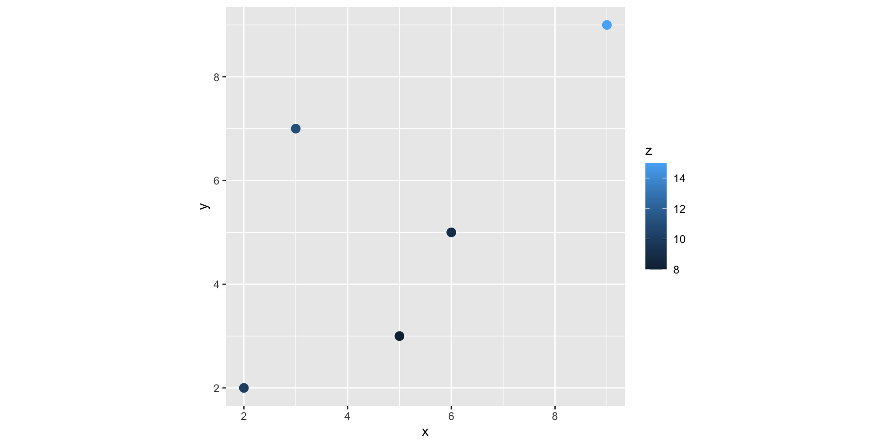
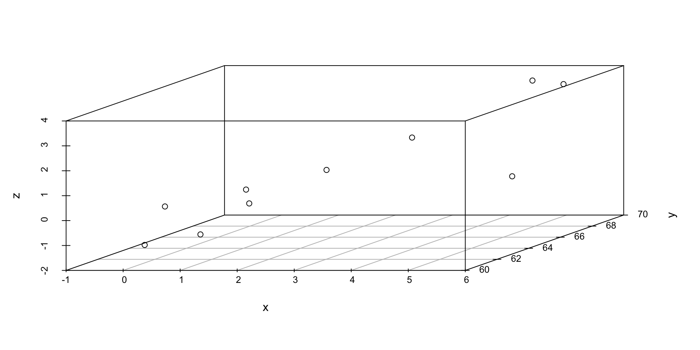
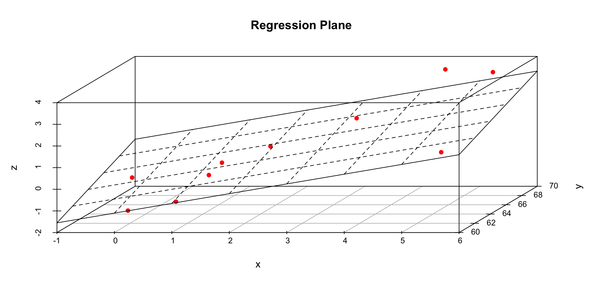

| x | y | z | d55 |
|---|---|---|---|
| 2 | 2 | 10 | 4.242641 |
| 3 | 7 | 11 | 2.828427 |
| 9 | 9 | 15 | 5.656854 |
| 6 | 5 | 9 | 1.000000 |
| 5 | 3 | 8 | 2.000000 |
How to estimate unknown values at specific locations?
Inverse Distance Weighting (IDW)
Trend surface analysis
Kriging
Nearest neighbours: Thiessen polygons (Voronoi diagram)
Triangulated Irregular Network (TIN)
| x | y | z | d55 |
|---|---|---|---|
| 2 | 2 | 10 | 4.242641 |
| 3 | 7 | 11 | 2.828427 |
| 9 | 9 | 15 | 5.656854 |
| 6 | 5 | 9 | 1.000000 |
| 5 | 3 | 8 | 2.000000 |

We want to find z value at x=5, y=5.
\[Z_p = \frac{\sum_{i=1}^{n}Z_i W_i}{\sum_{i=1}^{n}W_i}\]
Where,
\(Z_p\) = interpolated value at the grid node
\(Z_i\) = \(z_i\) value at location \((x_i, y_i)\)
\(W_i\) = weighting function
\(n\) = number of sample points
Usually, \(\sum_{i=1}^n w_i = 1\)
Weights - based on distance from each of the known points (\(i\)) to the point we want to estimate (\(k\))
Point \(i\) to point \(k\) weight is
\[w_i = \frac{\frac{1}{d_{ik}}}{\sum_{i=1}^n\frac{1}{d_{ik}}}\]
| x | y | z | d55 | inv_dis | weight |
|---|---|---|---|---|---|
| 2 | 2 | 10 | 4.242641 | 0.2357023 | 0.1040154 |
| 3 | 7 | 11 | 2.828427 | 0.3535534 | 0.1560231 |
| 9 | 9 | 15 | 5.656854 | 0.1767767 | 0.0780115 |
| 6 | 5 | 9 | 1.000000 | 1.0000000 | 0.4413000 |
| 5 | 3 | 8 | 2.000000 | 0.5000000 | 0.2206500 |
Predicted value at (5, 5)
\[z(5, 5) = 10\times 0.104 + 11 \times 0.156 + 15 \times 0.078 + 9 \times 0.441 + 8 \times 0.220\]
\(Z = \beta_o + \beta_1 X + \beta_2 Y + \epsilon\)
\(Z\) is the observational data, and \(X\) and \(Y\) are the geographic coordinates of locations where the observations are made.
\(Z = \beta_o + \beta_1 X + \beta_2 Y + \epsilon\)
\(Z\) is the observational data, and \(X\) and \(Y\) are the geographic coordinates of locations where the observations are made.
Step 1:
The spatial covariance structure of the sampled points is determined by fitting a variogram.
Step 2:
Weights are derived from this covariance structure are used to interpolate values for unsampled points or blocks across the spatial field.
“Kriging will in general not be more effective than simpler methods of interpolation if there is little spatial autocorrelation among the sampled data points (that is, if the values do not co-vary in space). If there is at least moderate spatial autocorrelation, however, kriging can be a helpful method to preserve spatial variability that would be lost using a simpler method (for an example, see Auchincloss 2007, below).”
Source: https://www.publichealth.columbia.edu/research/population-health-methods/kriging-interpolation#:~:text=Kriging%20can%20be%20understood%20as,blocks%20across%20the%20spatial%20field.
Shows how the dependence changes with distance.
The dependence across space of a randomfield \(Z\) is assessed using a variogram \(\gamma\):
\[\gamma(h)=\frac{1}{2}E[z(s)-z(s+h)]^2\]
\[\hat{\gamma}(h) = \frac{1}{2|N_h|}\sum_{(i, j)\epsilon N_h}(z(s_i)-z(s_j))^2\] while \(N_h\) stands for the number of pair observations \((i,j)\) separated by a spatial distance \(h\).
The terms \(z(s_i)\) and \(z(s_j)\) are the attribute values of observations \(i\) and \(j\) respectively.
Cressie-Hawkins: which is more robust to extreme values.
Other robust estimators:
Dowd
Genton
Step 1:
We compute sample values \(z\) at a pair of points with:
\[\frac{[z(x+h) - z(x)]^2}{2}\]
distance (lag): Euclidean distance
Source: https://scikit-gstat.readthedocs.io/en/latest/userguide/variogram.html
Source: https://scikit-gstat.readthedocs.io/en/latest/userguide/variogram.html
even - evenly spaced bins
uniform - same sample sized bins
sturges - derive number of bins by Sturge’s rule
scott - derive number of bins by Scotts’s rule
sqrt - derive number of bins by sqaureroot rule
doane - derive number of bins by Doane’s rule
fd - derive number of bins by Freedmann-Diaconis estimator
kmeans - derive bins by K-Means clustering
ward - derive bins by hierachical clustering and Ward’s criterion
stable_entropy - derive bins from stable entropy setting
Source: https://scikit-gstat.readthedocs.io/en/latest/userguide/variogram.html
Model the empirically observed and calculated experimental variogram with a proper mathematical function.
We need to define a function that takes a distance value and returns a semi-variance value
Source: https://mycourses.aalto.fi/pluginfile.php/1265858/course/section/161436/Lecture%204%20Introduction%20to%20kriging.pdf
Lag – The distance between sampling pairs
Sill – The value where the semivariogram first flattens off, the maximum level of semivariance.
Range – The point where the semivariogram reaches the sill on the lag-axis. Sample points that are farther apart than range are not spatially autocorrelated.
Nugget – The value of the variogram with 0 lag; errors in measurements
Sill, range and nugget define the variogram model
Click here: https://scikit-gstat.readthedocs.io/en/latest/userguide/variogram.html
Describe the spatial variation with variogram
Summarize the variation with a mathematical function
Use the function to determine interpolation weights
With the weights calculated, interpolation is the same as with IDW
Advantage: Kriging also produces kriging variance which can be used for estimating the uncertainty of the interpolation
Source:https://link.springer.com/chapter/10.1007/978-3-030-17860-4_16
\(C\) - variogram function
Stationarity: The process “looks” the same at each location. Mean and variance do not change over space.
Therefore, parameters (such as the overall mean of the values, and the range and sill of the variogram) do not vary across the study space. The same variogram model is assumed to be valid across the study space.
Isotropy – uniformity in all directions
The dependence between locations is determined only by their separating distance neglecting the direction.
– Ordinary
– Simple
– Universal
– Block
– Indicator
– Co-kriging
Estimates averaged values over gridded “blocks” rather than single points. These blocks often have smaller prediction errors than are seen for individual points.
Drop one input point out of the model
Interpolate the surface with kriging
Compare measured (i.e. observed) value and predicted (i.e. from kriging) value
Calculate error measures
The content of the slides are based on